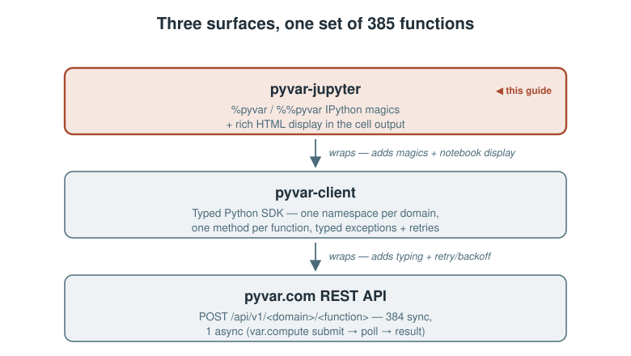

pyvar-jupyter adds IPython magics and rich HTML display on top of pyvar-client — the notebook-ergonomics layer, not a second API client. If you already know pyvar-client, everything here is the same 385 functions, called with less typing.

Install and load
pip install pyvar-jupyter
Installs pyvar-client automatically. In a notebook cell:
%load_ext pyvar_jupyter %pyvar_key eyJ... # or export PYVAR_API_KEY before starting the kernel
Your first call
%pyvar market_risk.historical_simulation_var returns=[0.01,-0.02,0.015] portfolio_value=1000000
The result renders as a formatted HTML table in the cell output, and is also returned to Out[] — result["var_abs"] works on it directly, same as the plain pyvar-client dict it wraps.
Line magic vs. cell magic
The line form (%pyvar) takes params as space-separated key=value tokens, each parsed with ast.literal_eval — numbers, lists, dicts, booleans, and None all come through as their real Python type, not strings:
%pyvar var.compute returns=[0.01,-0.02,0.015] \
portfolio_value=1000000 confidence_level=0.99 n_simulations=100000
Once params get large or nested — arrays of arrays, nested objects — the cell form (%%pyvar) takes a JSON object in the cell body instead:
%%pyvar derivatives.heston_stochastic_volatility_model
{
"spot": 100.0,
"strike": 105.0,
"rate": 0.02,
"tau": 1.0,
"v0": 0.04,
"kappa": 2.0,
"theta": 0.04,
"sigma": 0.3,
"rho": -0.7,
"option_type": "call"
}
Forgot the parameters? Just call it empty
Either form, called with no parameters, prints the function's docstring and signature instead of making a doomed API call:
%pyvar market_risk.historical_simulation_var
historical_simulation_var(*, returns: 'list[float] | list[list[float]]', portfolio_value: 'float', confidence_level: 'float' = 0.99) -> 'dict[str, Any]' Non-parametric Historical Simulation VaR. Re-prices the portfolio under each observed historical return and reads the empirical loss quantile — making no distributional assumption.
![One call, two views — both %pyvar and %%pyvar magic forms parse their params differently but dispatch to the same pyvar-client call, which renders as an HTML table and is also bound to Out[]](./assets/diagrams/jupyter-magic-dispatch.svg)
The display helper, without magics
pyvar_jupyter.show() wraps any pyvar-client result for the same rich HTML rendering — useful in a loop or a script cell where you're calling Client directly:
from pyvar_client import Client
import pyvar_jupyter
client = Client(api_key="eyJ...")
result = client.market_risk.historical_simulation_var(
returns=[0.01, -0.02, 0.015], portfolio_value=1_000_000,
)
pyvar_jupyter.show(result)
The wrapped object still behaves like the underlying dict — show() only changes how it renders.
Session config, without repeating yourself
%pyvar_key eyJ... # set/replace the API key for this kernel (in-memory only) %pyvar_base_url http://localhost:8000 # point at a local/dev deployment instead of prod
Neither is needed if PYVAR_API_KEY / PYVAR_API_BASE_URL are already set as environment variables before the kernel starts — the same variable names pyvar-client's own CLI and the pyvar-mcp plugin use, so one .env covers all three.
Nine worked examples, ready to run
All nine ship in pyvar-jupyter/examples/. Each needs only a free-tier API key.
1. Portfolio Monte Carlo VaR/CVaR
A synthetic, fixed-seed daily return series, run through var.compute — the one async function in the whole API — at 99% confidence:
%load_ext pyvar_jupyter
%pyvar_key eyJ...
import random
random.seed(7)
returns = [random.gauss(0.0004, 0.012) for _ in range(500)]
result = %pyvar var.compute returns={returns} portfolio_value=1000000 confidence_level=0.99 n_simulations=100000
result["var_abs"], result["cvar_abs"]
The notebook then sweeps three confidence levels (95%, 97.5%, 99%) by calling Client directly in a loop and wrapping each result with pyvar_jupyter.show() — confirming the expected regulatory ordering: 99% VaR > 95% VaR, and ES ≥ VaR at every level.
2. Basel Traffic-Light Backtest
market_risk.traffic_light_backtesting — the Basel Committee's 250-trading-day VaR-breach test (green < 5 breaches, yellow 5–9, red ≥ 10) — against a synthetic return/VaR-estimate series with three deliberately forced breaches:
import random
random.seed(11)
n_days = 250
daily_var_estimate = 0.025
actual_returns = [random.gauss(0.0002, 0.011) for _ in range(n_days)]
for day in (40, 120, 210):
actual_returns[day] = -(daily_var_estimate + 0.005)
var_estimates = [daily_var_estimate] * n_days
result = %pyvar market_risk.traffic_light_backtesting actual_returns={actual_returns} var_estimates={var_estimates}
result
With this exact seed, the result comes out n_breaches: 6, basel_zone: "yellow" — the 3 forced breaches plus a few more from the random baseline alone, a small, honest reminder that a synthetic series doesn't give you exactly the number you engineered into it.
3. American Option Pricing with Greeks
derivatives.american_option_lsm — an American option priced via Longstaff-Schwartz Monte Carlo, with bump-and-reprice Greeks opted in via greeks=True:
result = %pyvar derivatives.american_option_lsm spot=100.0 strike=100.0 rate=0.05 sigma=0.20 tau=1.0 \
option_type=put greeks=True seed=41
assert result["delta"] < 0, "a put's delta should be negative"
assert result["gamma"] > 0, "gamma should be positive near the money"
print(f"price={result['price']:.4f} delta={result['delta']:.4f} gamma={result['gamma']:.5f}")
S=K=100, r=5%, σ=20%, τ=1 year is the textbook Longstaff-Schwartz reference case — the function's own docstring cites a ~6.024 European-price benchmark at this exact input set, giving a built-in sanity check on the American price this call returns (which must be ≥ the European price). The notebook closes with a put-vs-call delta comparison, confirming both come back with the expected sign and roughly symmetric magnitude near the money.
4. Credit Risk: Expected Loss
credit_risk.expected_loss_el_computation — the standard IRB building block, EL = PD × LGD × EAD, for a single exposure:
result = %pyvar credit_risk.expected_loss_el_computation pd=0.02 lgd=0.45 ead=5000000 result
A 2% PD, 45% LGD, and a £5,000,000 EAD produce el: 45000.0 and el_rate: 0.009 — 0.9% of exposure. Because EL is just a product of the three inputs, this doubles as a sanity check ahead of a more elaborate portfolio-level credit model: if a portfolio aggregate doesn’t reconcile to the sum of exposures run through this formula, something upstream is wrong.
5. Liquidity Risk: Basel III LCR
liquidity_risk.liquidity_coverage_ratio_lcr — LCR = HQLA / net 30-day outflows, with inflows capped at 75% of gross outflows (BCBS 238 §69):
result = %pyvar liquidity_risk.liquidity_coverage_ratio_lcr hqla=120000000 \
gross_outflows=150000000 gross_inflows=40000000
result
£120m of HQLA against £150m of stressed outflows and £40m of inflows (below the £112.5m cap, so nothing gets floored) gives lcr: 1.090909 — 109.1%, above the 100% minimum, compliant: true.
6. Operational Risk: OpVaR
operational_risk.operational_var_opvar — reads the loss quantile at a given confidence level directly from a supplied annual-loss sample:
import numpy as np
rng = np.random.default_rng(23)
annual_losses = rng.lognormal(mean=13.0, sigma=1.1, size=10_000)
result = client.operational_risk.operational_var_opvar(
annual_losses=annual_losses.tolist(), confidence_level=0.999
)
result
At the Basel AMA 99.9% confidence level, this seed produces opvar ≈ £12.9m, expected_shortfall ≈ £23.8m, and expected_loss ≈ £802k — expected_shortfall ≥ opvar ≥ expected_loss always holds by construction, the same tail-ordering property market_risk’s ES/VaR pair guarantees, applied here to a loss distribution instead of a P&L distribution.
7. Portfolio Analytics: Maximum Sharpe Ratio Portfolio
portfolio.maximum_sharpe_ratio_portfolio — SLSQP-optimised weights maximising the annualised Sharpe ratio, long-only by default:
result = %pyvar portfolio.maximum_sharpe_ratio_portfolio \
mean_returns=[0.08,0.11,0.06,0.09] \
cov_matrix=[[0.04,0.015,0.005,0.01],[0.015,0.09,0.01,0.02],[0.005,0.01,0.0225,0.006],[0.01,0.02,0.006,0.0625]] \
risk_free=0.03 periods_per_year=1
result
Four assets, the highest-return one (11%) also carries the highest standalone variance — the optimiser lands on roughly 30%/20%/28%/22%, an 8.26% expected return, 13.99% volatility, and a 0.376 Sharpe ratio, success: true confirming SLSQP converged.
8. Regulatory: Basel III CET1 Ratio
regulatory.basel_iii_cet1_ratio — CET1 ratio = CET1 capital / RWA, checked against the 4.5% Basel III §50 minimum:
result = %pyvar regulatory.basel_iii_cet1_ratio cet1_capital=8500000000 risk_weighted_assets=62000000000 result
£8.5bn of CET1 capital against £62bn of RWA gives cet1_ratio: 0.13709677 — 13.71%, with surplus: 0.09209677 (9.21 points of headroom) above the minimum and compliant: true, before any capital-conservation, countercyclical, or Pillar 2A/2B buffer stacks on top.
9. ALM: EVE Sensitivity Under IRRBB’s Six Standard Shocks
alm.eve_sensitivity_analysis — ΔEVE under each of BCBS d368’s six prescribed rate-shock scenarios, plus the worst case:
result = %pyvar alm.eve_sensitivity_analysis \
times=[0.25,1.0,2.0,5.0,10.0,20.0] \
net_cashflows=[15000000,25000000,-10000000,40000000,-20000000,30000000] \
base_rates=[0.035,0.037,0.039,0.042,0.044,0.045]
result
base_eve comes out to roughly £61.45m; of the six shocks, parallel_up produces the largest fall (−£4.96m) and is also worst_case here. A longer-duration liability book would instead see parallel_down or steepener dominate — precisely why the framework tests all six rather than assuming parallel risk always binds.
Try it
pip install pyvar-jupyter jupyter notebook
Then, in a fresh notebook:
%load_ext pyvar_jupyter %pyvar_key your-free-tier-key %pyvar market_risk.historical_simulation_var returns=[0.01,-0.02,0.015,0.008,-0.011] portfolio_value=1000000
Sources
pyvar-jupyter/README.md— install, quick start, magic forms, display helper, session config — the primary source for this article, quoted and lightly adapted throughout.pyvar-jupyter/examples/— all nine worked examples above (01_portfolio_var.ipynbthrough09_alm_eve_sensitivity.ipynb), code cells reproduced directly from the shipped notebooks.pyvar-jupyter/pyvar_jupyter/_magics.py,_display.py— the line/cell magic dispatch andshow()implementation these examples exercise.docs/publications/pyvar-client-guide-medium-article.md— the companion SDK guide this piece builds on without repeating.